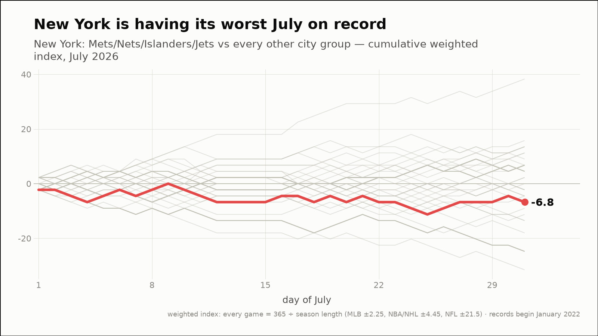
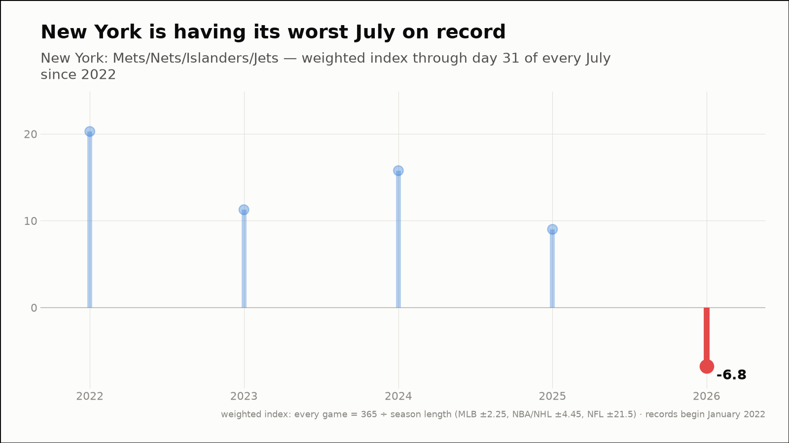
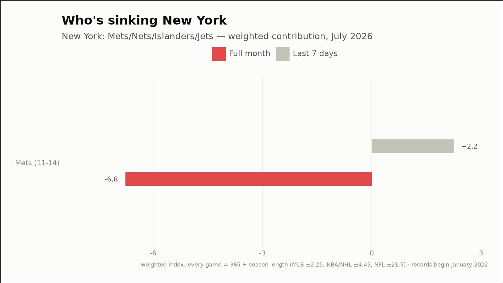
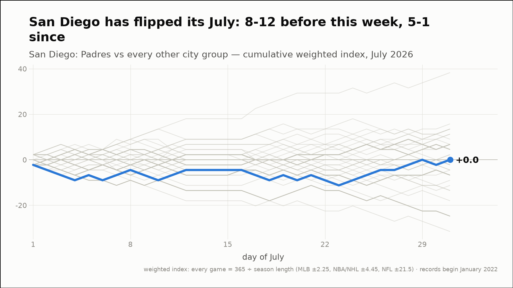
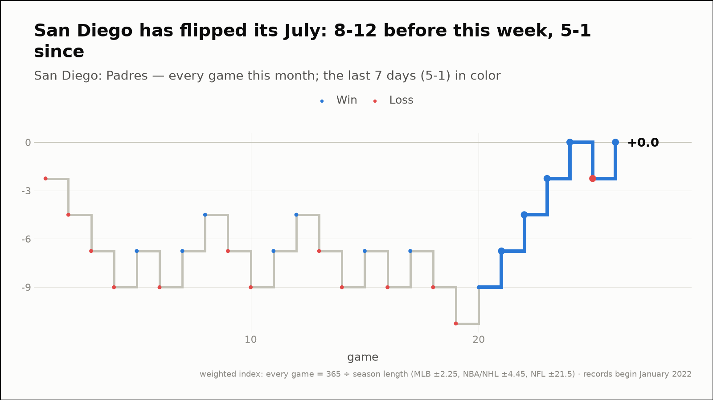
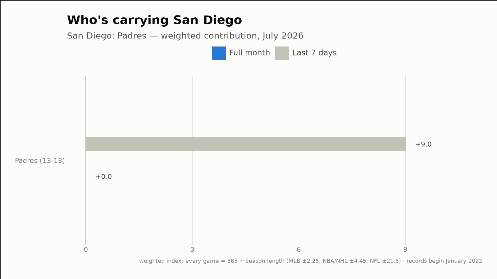
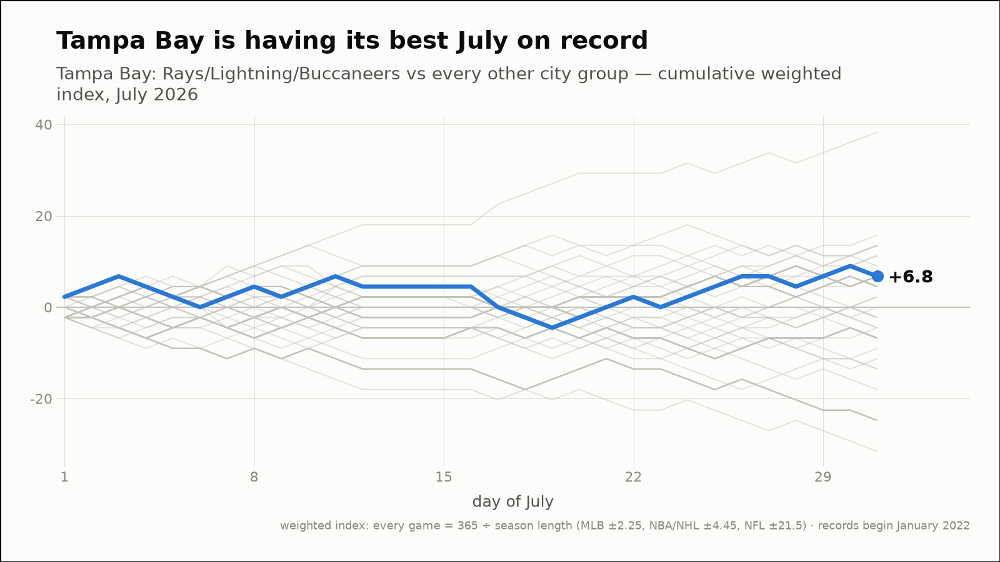
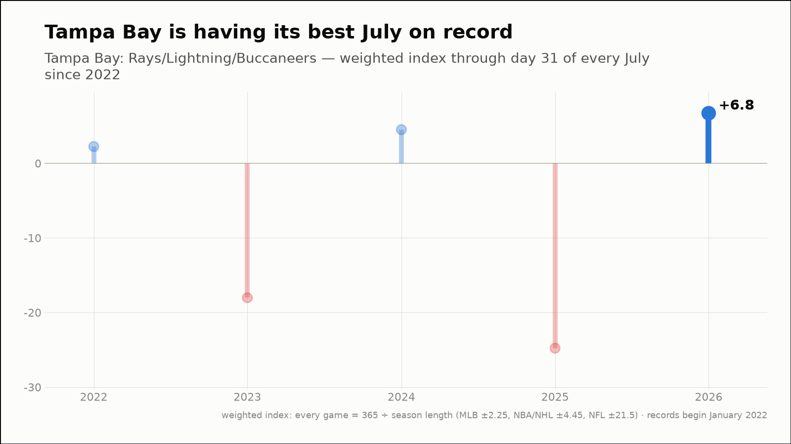
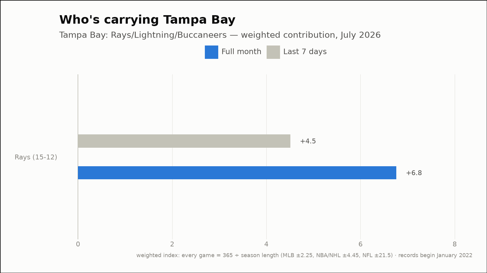

Out of the norm — three fandoms off their own script
The weekly hunt across all 88 city groups, through July 31, 2026
New York is having its worst July on record
New York: Mets/Nets/Islanders/Jets
- This month (through July 31)
- 11-14, -6.8 weighted — 1st-worst July of the 5 since 2022
- Last 7 days
- 4-3, +2.2 weighted
- Driving it this week
- Mets (4-3, +2.2)



San Diego has flipped its July: 8-12 before this week, 5-1 since
San Diego: Padres
- Before this week
- 8-12, -9.0 weighted (-0.45 per game)
- Since
- 5-1, +9.0 weighted (+1.50 per game)
- This month (through July 31)
- 13-13, +0.0 weighted
- Last 7 days
- 5-1, +9.0 weighted
- Driving it this week
- Padres (5-1, +9.0)



Tampa Bay is having its best July on record
Tampa Bay: Rays/Lightning/Buccaneers
- This month (through July 31)
- 15-12, +6.8 weighted — 1st-best July of the 5 since 2022
- Last 7 days
- 4-2, +4.5 weighted
- Driving it this week
- Rays (4-2, +4.5)


